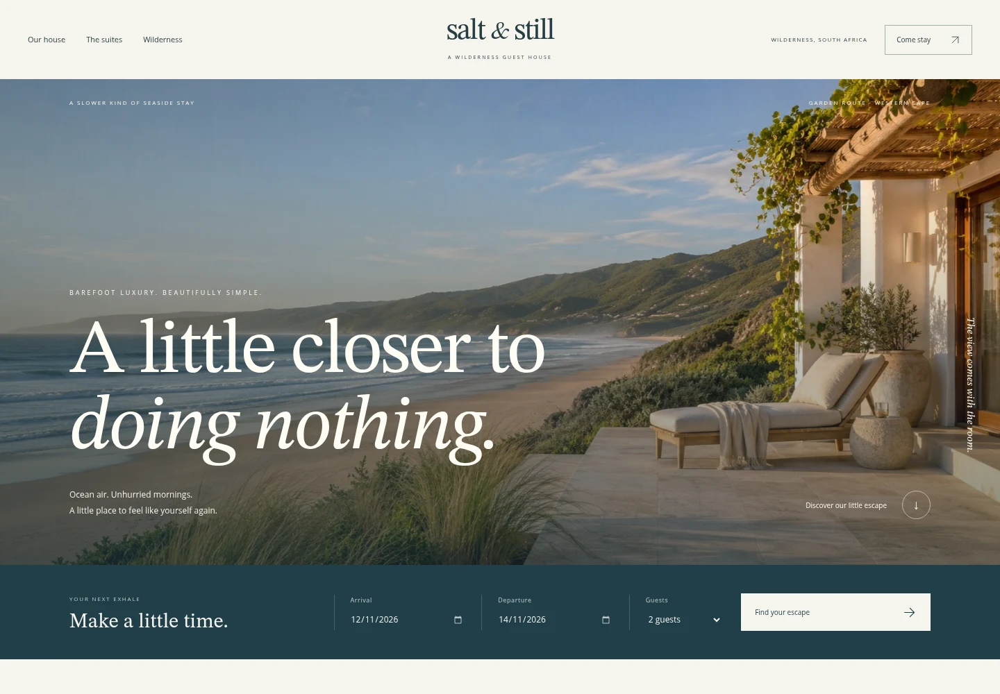

The proof is in the making
A few things
worth sharing.
Websites I’ve designed, built, and put online. Explore the details, watch the walkthroughs, and try the live builds.
Designed, built & live2 projects
Mohammed’s Barber Shop
Web design & development · Live website

Salt & Still
Web design & development · Live website
A note on the work
Mohammed’s Barber Shop and Salt & Still are live, working websites built for fictional businesses. Salt & Still’s stay planner is a demo, with illustrative rates and no real reservations. All are independent projects, with no client affiliations or performance claims.
Your idea could be next
Let’s put good
thinking to work.
Have something you’d like to bring to life? Let’s talk.
Start a conversation